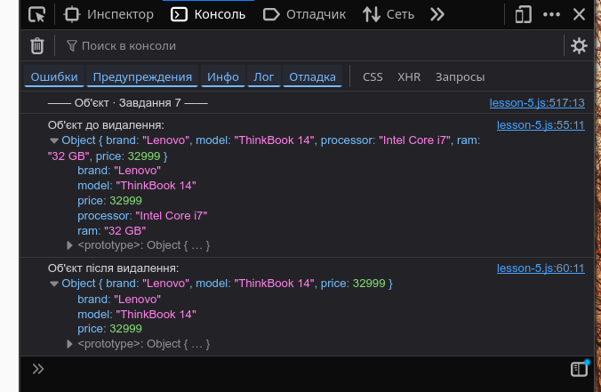
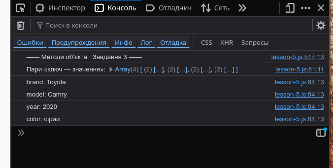
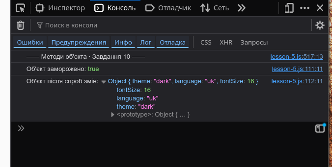
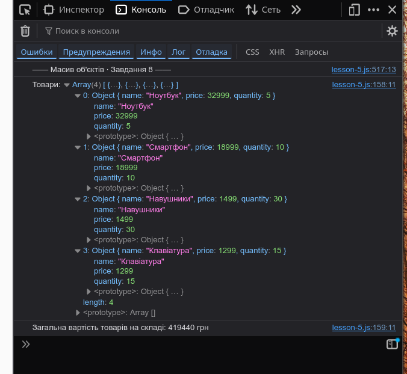
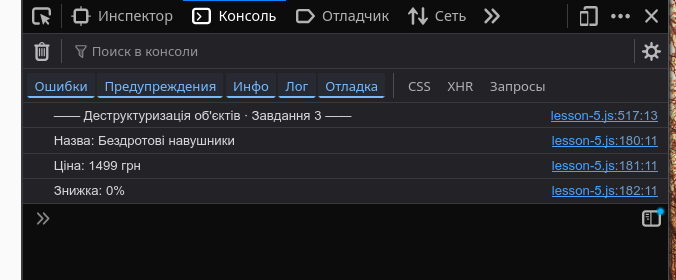
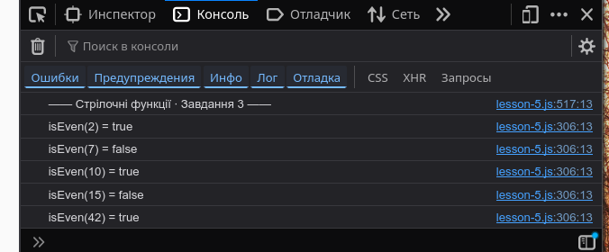
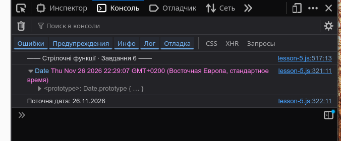
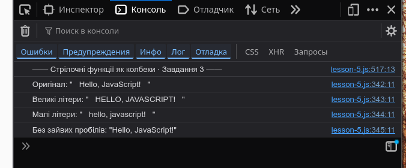

Звіт з Лабораторної роботи №5
Тема, мета. Місце розташування сайту, звіту
Тема: ОБ'ЄКТ. МЕТОДИ ОБ'ЄКТА. МАСИВ ОБ'ЄКТІВ. ДЕСТРУКТУРИЗАЦІЯ ОБ'ЄКТІВ. CALLBACK. СТРІЛОЧНІ ФУНКЦІЇ. СТРІЛОЧНІ ФУНКЦІЇ ЯК КОЛБЕКИ. ПЕРЕБИРАЮЧІ МЕТОДИ МАСИВУ
Мета: придбати практичні навички роботи з об'єктами, методами об'єктів, масивами об'єктів, деструктуризацією об'єктів, callback-функціями, стрілочними функціями, стрілочними функціями як колбеками, перебираючими методами масиву.
Репозиторії:
- Репозиторій власного WEB-застосунку
- Репозиторій звітного HTML-документа
- Репозиторій WEB-застосунку із завданнями
Живі сторінки:
Номер у списку групи — 23, варіант завдань — №3. Усі завдання виконано у файлі js/lesson-5.js, а запускаються кнопками на сторінці index.html; результати виводяться у вкладку Console.
| Підтема | Завдання варіанта №3 |
|---|---|
| Об'єкт | 3, 7 |
| Методи об'єкта | 3, 10 |
| Масив об'єктів | 3, 8 |
| Деструктуризація об'єктів | 3, 7, 10 |
| Callback-функції | 3, 9 |
| Стрілочні функції | 3, 6 |
| Стрілочні функції як колбеки | 3, 5, 8 |
| Перебираючі методи масиву | 3, 5, 10 |
Об'єкт
Завдання 3. Об'єкт «Товар»
Створено об'єкт product із чотирма властивостями (назва, категорія, ціна, кількість на складі). Доступ до властивостей здійснюється через крапку, а інформація виводиться окремими повідомленнями в Console за допомогою шаблонних рядків.
Програмний код:
/* ---------- Об'єкт. Завдання 3. Об'єкт «Товар» ----------
Створіть об'єкт product, який містить назву товару, категорію, ціну
та кількість одиниць на складі. Виведіть інформацію про товар
у вигляді окремих повідомлень у консоль.
*/
function object3() {
const product = {
name: "Ноутбук Lenovo ThinkBook 14",
category: "Ноутбуки та ПК",
price: 32999,
stock: 12,
};
console.log(`Назва товару: ${product.name}`);
console.log(`Категорія: ${product.category}`);
console.log(`Ціна: ${product.price} грн`);
console.log(`Кількість на складі: ${product.stock} шт.`);
}Результат виконання:

Завдання 7. Видалення властивостей об'єкта
Створено об'єкт laptop із п'ятьма властивостями. Властивості processor і ram видалено оператором delete. Щоб у Console зберігся стан «до», виведено копію об'єкта, створену оператором розгортання ({ ...laptop }).
Програмний код:
/* ---------- Об'єкт. Завдання 7. Видалення властивостей об'єкта ----------
Створіть об'єкт laptop із властивостями brand, model, processor, ram,
price. Видаліть властивості processor та ram за допомогою оператора
delete. Виведіть об'єкт до та після видалення властивостей.
*/
function object7() {
const laptop = {
brand: "Lenovo",
model: "ThinkBook 14",
processor: "Intel Core i7",
ram: "32 GB",
price: 32999,
};
console.log("Об'єкт до видалення:", { ...laptop }); // копія, щоб зберегти стан «до»
delete laptop.processor;
delete laptop.ram;
console.log("Об'єкт після видалення:", laptop);
}Результат виконання:

Методи об'єкта
Завдання 3. Отримання пар «ключ — значення»
Метод Object.entries() повертає масив пар «ключ — значення». Масив виведено в Console, а потім перебрано методом forEach() із деструктуризацією пари у змінні key і value.
Програмний код:
/* ---------- Методи об'єкта. Завдання 3. Отримання пар «ключ — значення» ----------
Створіть об'єкт car із властивостями brand, model, year, color.
За допомогою методу Object.entries() отримайте масив пар
«ключ — значення». Виведіть результат у консоль.
*/
function methods3() {
const car = {
brand: "Toyota",
model: "Camry",
year: 2020,
color: "сірий",
};
const entries = Object.entries(car);
console.log("Пари «ключ — значення»:", entries);
entries.forEach(([key, value]) => {
console.log(`${key}: ${value}`);
});
}Результат виконання:

Завдання 10. Заборона зміни властивостей об'єкта
Об'єкт settings заморожено методом Object.freeze(). Спроби змінити, додати та видалити властивості ігноруються, а Object.isFrozen() підтверджує, що об'єкт заморожений.
Програмний код:
/* ---------- Методи об'єкта. Завдання 10. Заборона зміни властивостей об'єкта ----------
Створіть об'єкт settings, який містить властивості theme, language,
fontSize. Використайте метод Object.freeze() для заборони зміни
об'єкта. За допомогою Object.isFrozen() перевірте, чи заморожений
об'єкт. Виведіть результат у консоль.
*/
function methods10() {
const settings = {
theme: "dark",
language: "uk",
fontSize: 16,
};
Object.freeze(settings);
// Спроби змін мовчки ігноруються (у strict mode дали б помилку)
settings.theme = "light";
settings.fontSize = 24;
settings.newProp = "test";
delete settings.language;
console.log("Об'єкт заморожено:", Object.isFrozen(settings));
console.log("Об'єкт після спроб змін:", settings);
}Результат виконання:

Масив об'єктів
Завдання 3. Отримання першого та останнього елементів
Масив books містить п'ять об'єктів. Назва першої книги береться за індексом 0, останньої — за індексом books.length - 1.
Програмний код:
/* ---------- Масив об'єктів. Завдання 3. Отримання першого та останнього елементів ----------
Створіть масив об'єктів books, у якому зберігається інформація
про п'ять книг. Виведіть у консоль назву першої та останньої книги,
використовуючи індекси масиву.
*/
function array3() {
const books = [
{ id: 1, title: "Кобзар", author: "Тарас Шевченко", year: 1840 },
{ id: 2, title: "Тіні забутих предків", author: "Михайло Коцюбинський", year: 1911 },
{ id: 3, title: "Intermezzo", author: "Михайло Коцюбинський", year: 1909 },
{ id: 4, title: "Лісова пісня", author: "Леся Українка", year: 1911 },
{ id: 5, title: "Захар Беркут", author: "Іван Франко", year: 1883 },
];
console.log(`Перша книга: ${books[0].title}`);
console.log(`Остання книга: ${books[books.length - 1].title}`);
}Результат виконання:

Завдання 8. Обчислення загальної вартості товарів
Масив products містить товари з властивостями name, price і quantity. Циклом for...of до змінної total додається price * quantity кожного товару.
Програмний код:
/* ---------- Масив об'єктів. Завдання 8. Обчислення загальної вартості товарів ----------
Створіть масив об'єктів products, у якому кожен товар має властивості
name, price та quantity. Використовуючи цикл for...of, обчисліть
загальну вартість усіх товарів на складі з урахуванням їхньої
кількості.
*/
function array8() {
const products = [
{ name: "Ноутбук", price: 32999, quantity: 5 },
{ name: "Смартфон", price: 18999, quantity: 10 },
{ name: "Навушники", price: 1499, quantity: 30 },
{ name: "Клавіатура", price: 1299, quantity: 15 },
];
let total = 0;
for (const product of products) {
total += product.price * product.quantity;
}
console.log("Товари:", products);
console.log(`Загальна вартість товарів на складі: ${total} грн`);
}Результат виконання:

Деструктуризація об'єктів
Завдання 3. Значення за замовчуванням
Під час деструктуризації для властивості discount, якої немає в об'єкті, задано значення за замовчуванням 0.
Програмний код:
/* ---------- Деструктуризація. Завдання 3. Значення за замовчуванням ----------
Створіть об'єкт product, який містить властивості name та price,
але не містить властивості discount. Виконайте деструктуризацію
та задайте для discount значення за замовчуванням 0. Виведіть
назву товару, ціну та знижку.
*/
function destruct3() {
const product = {
name: "Бездротові навушники",
price: 1499,
};
const { name, price, discount = 0 } = product;
console.log(`Назва: ${name}`);
console.log(`Ціна: ${price} грн`);
console.log(`Знижка: ${discount}%`);
}Результат виконання:

Завдання 7. Деструктуризація параметрів функції
Функція showStudent приймає об'єкт і деструктуризує його безпосередньо в параметрах: { name, age, group }. Функцію викликано для двох студентів.
Програмний код:
/* ---------- Деструктуризація. Завдання 7. Деструктуризація параметрів функції ----------
Створіть функцію showStudent(), яка приймає об'єкт студента як
параметр. Використайте деструктуризацію безпосередньо в параметрах
функції для отримання властивостей name, age, group. Функція повинна
виводити інформацію про студента.
*/
function showStudent({ name, age, group }) {
console.log(`Студент: ${name}, вік: ${age}, група: ${group}`);
}
function destruct7() {
showStudent({ name: "Антон", age: 19, group: "ІО-45" });
showStudent({ name: "Олена", age: 20, group: "ІП-41" });
}Результат виконання:

Завдання 10. Опрацювання об'єкта відповіді сервера
Об'єкт response імітує відповідь сервера. Вкладена деструктуризація з перейменуванням (name → userName, email → userEmail, city → userCity, status → responseStatus) дістає потрібні дані одним записом.
Програмний код:
/* ---------- Деструктуризація. Завдання 10. Опрацювання об'єкта відповіді сервера ----------
Створіть об'єкт response, який імітує відповідь сервера та містить
вкладені дані користувача: data.user.name, data.user.email,
data.user.address.city, а також властивість status. Використовуючи
вкладену деструктуризацію та перейменування властивостей, отримайте
ім'я, електронну пошту, місто та статус відповіді.
*/
function destruct10() {
const response = {
status: 200,
data: {
user: {
name: "Антон",
email: "anton@example.com",
address: {
city: "Київ",
},
},
},
};
const {
status: responseStatus,
data: {
user: {
name: userName,
email: userEmail,
address: { city: userCity },
},
},
} = response;
console.log(`Ім'я: ${userName}`);
console.log(`Email: ${userEmail}`);
console.log(`Місто: ${userCity}`);
console.log(`Статус відповіді: ${responseStatus}`);
}Результат виконання:

Callback-функції
Завдання 3. Обробка імені за допомогою callback
Функція formatName приймає ім'я та callback і повертає результат його виклику. Передано два callback: toUpperName (великі літери) та capitalizeName (перша літера велика).
Програмний код:
/* ---------- Callback. Завдання 3. Обробка імені за допомогою callback ----------
Створіть функцію formatName(), яка приймає ім'я та функцію зворотного
виклику. Реалізуйте два варіанти callback: перетворення імені на великі
літери та перетворення першої літери на велику. Перевірте роботу обох
варіантів.
*/
function formatName(name, callback) {
return callback(name);
}
function toUpperName(name) {
return name.toUpperCase();
}
function capitalizeName(name) {
return name.charAt(0).toUpperCase() + name.slice(1).toLowerCase();
}
function callback3() {
console.log(formatName("олена", toUpperName)); // ОЛЕНА
console.log(formatName("андрій", toUpperName)); // АНДРІЙ
console.log(formatName("олена", capitalizeName)); // Олена
console.log(formatName("МАРІЯ", capitalizeName)); // Марія
}Результат виконання:

Завдання 9. Власна функція для обробки масиву
Функція processArray за допомогою for...of передає кожен елемент масиву в callback, а callback printSquare виводить квадрат числа.
Програмний код:
/* ---------- Callback. Завдання 9. Власна функція для обробки масиву ----------
Створіть функцію processArray(), яка приймає масив чисел та функцію
зворотного виклику. За допомогою циклу for...of переберіть елементи
масиву та передайте кожен елемент у callback. Створіть callback,
який виводить квадрат кожного числа.
*/
function processArray(numbers, callback) {
for (const number of numbers) {
callback(number);
}
}
function printSquare(number) {
console.log(`Квадрат числа ${number} дорівнює ${number * number}`);
}
function callback9() {
processArray([1, 2, 3, 4, 5], printSquare);
}Результат виконання:

Стрілочні функції
Завдання 3. Перевірка парності числа
Функцію isEven оголошено як стрілочну з неявним поверненням результату: number % 2 === 0. Перевірено для п'яти чисел.
Програмний код:
/* ---------- Стрілочні функції. Завдання 3. Перевірка парності числа ----------
Створіть стрілочну функцію isEven, яка приймає число та повертає true,
якщо число парне, і false, якщо непарне. Перевірте роботу функції
для п'яти різних чисел.
*/
const isEven = (number) => number % 2 === 0;
function arrow3() {
[2, 7, 10, 15, 42].forEach((number) => {
console.log(`isEven(${number}) = ${isEven(number)}`);
});
}Результат виконання:

Завдання 6. Створення функції без параметрів
showDate — стрілочна функція без параметрів, яка повертає new Date(). У Console виведено об'єкт Date та дату у форматі uk-UA.
Програмний код:
/* ---------- Стрілочні функції. Завдання 6. Створення функції без параметрів ----------
Створіть стрілочну функцію showDate, яка не приймає параметрів та
повертає поточну дату. Використайте об'єкт Date. Виведіть результат
у консоль.
*/
const showDate = () => new Date();
function arrow6() {
const now = showDate();
console.log(now);
console.log(`Поточна дата: ${now.toLocaleDateString("uk-UA")}`);
}Результат виконання:

Стрілочні функції як колбеки
Завдання 3. Форматування тексту
Функція formatText приймає текст і функцію форматування. Як callback передано три стрілочні функції: toUpperCase(), toLowerCase() та trim().
Програмний код:
/* ---------- Стрілочні як колбеки. Завдання 3. Форматування тексту ----------
Створіть функцію formatText(), яка приймає текст і функцію
форматування. Використовуючи стрілочні функції як callback,
реалізуйте перетворення тексту на великі літери, малі літери
та видалення зайвих пробілів за допомогою trim().
*/
function formatText(text, formatter) {
return formatter(text);
}
function arrowCb3() {
const text = " Hello, JavaScript! ";
console.log(`Оригінал: "${text}"`);
console.log(`Великі літери: "${formatText(text, (str) => str.toUpperCase())}"`);
console.log(`Малі літери: "${formatText(text, (str) => str.toLowerCase())}"`);
console.log(`Без зайвих пробілів: "${formatText(text, (str) => str.trim())}"`);
}Результат виконання:

Завдання 5. Обробка натискання кнопки
На сторінці є кнопка «Натисни мене». Обробник події click, доданий через addEventListener(), — стрілочна функція, яка збільшує лічильник натискань і виводить повідомлення і в Console, і на сторінці.
Програмний код:
/* ---------- Стрілочні як колбеки. Завдання 5. Обробка натискання кнопки ----------
Створіть HTML-сторінку з кнопкою button та підключеним JavaScript-файлом.
За допомогою addEventListener() додайте обробник події click.
Для обробника використайте стрілочну функцію, яка виводить повідомлення
на сторінці або в консолі.
*/
function arrowCb5Init() {
const button = document.getElementById("click-button");
const output = document.getElementById("click-output");
if (!button || !output) return;
let clicks = 0;
button.addEventListener("click", () => {
clicks += 1;
const message = `Кнопку натиснуто: ${clicks}`;
console.log(message);
output.textContent = message;
});
}Результат виконання:

Завдання 8. Повторне виконання стрілочної функції
setInterval() зі стрілочною функцією щосекунди збільшує лічильник і виводить його в Console. Після п'яти повторень інтервал зупиняється викликом clearInterval().
Програмний код:
/* ---------- Стрілочні як колбеки. Завдання 8. Повторне виконання стрілочної функції ----------
Використовуючи setInterval(), створіть програму, яка щосекунди виводить
у консоль поточне значення лічильника. Callback реалізуйте за допомогою
стрілочної функції. Після п'яти повторень зупиніть виконання через
clearInterval().
*/
let counterTimerId = null;
function arrowCb8() {
if (counterTimerId !== null) {
console.log("Лічильник уже запущено, зачекайте завершення");
return;
}
let counter = 0;
counterTimerId = setInterval(() => {
counter += 1;
console.log(`Лічильник: ${counter}`);
if (counter === 5) {
clearInterval(counterTimerId);
counterTimerId = null;
console.log("Лічильник зупинено");
}
}, 1000);
}Результат виконання:

Перебираючі методи масиву
Завдання 3. Фільтрація масиву за допомогою filter()
Метод filter() зі стрілочною функцією student => student.grade >= 80 повертає новий масив студентів з оцінкою від 80 балів. Початковий масив не змінюється.
Програмний код:
/* ---------- Перебираючі методи. Завдання 3. Фільтрація масиву за допомогою filter() ----------
Створіть масив об'єктів students із властивостями name, age, grade.
Використовуючи метод filter(), створіть новий масив студентів, оцінка
яких більша або дорівнює 80 балам. Виведіть результат у консоль.
*/
function iter3() {
const students = [
{ name: "Олена", age: 20, grade: 95 },
{ name: "Андрій", age: 21, grade: 72 },
{ name: "Марія", age: 19, grade: 88 },
{ name: "Іван", age: 20, grade: 60 },
{ name: "Софія", age: 22, grade: 80 },
];
const successfulStudents = students.filter((student) => student.grade >= 80);
console.log("Усі студенти:", students);
console.log("Студенти з оцінкою від 80:", successfulStudents);
}Результат виконання:

Завдання 5. Пошук індексу елемента за допомогою findIndex()
Метод findIndex() шукає товар за id. Для наявного id повертається індекс, для відсутнього — -1, і виводиться повідомлення, що товар не знайдено.
Програмний код:
/* ---------- Перебираючі методи. Завдання 5. Пошук індексу елемента за допомогою findIndex() ----------
Створіть масив об'єктів товарів із властивостями id, name, price.
Використовуючи метод findIndex(), знайдіть індекс товару з визначеним
ідентифікатором. Виведіть індекс у консоль. Якщо товар не знайдено,
виведіть повідомлення.
*/
function iter5() {
const products = [
{ id: 101, name: "Ноутбук", price: 32999 },
{ id: 102, name: "Смартфон", price: 18999 },
{ id: 103, name: "Навушники", price: 1499 },
{ id: 104, name: "Клавіатура", price: 1299 },
];
[103, 999].forEach((id) => {
const index = products.findIndex((product) => product.id === id);
if (index === -1) {
console.log(`Товар з id ${id} не знайдено`);
} else {
console.log(`Товар з id ${id} має індекс ${index}`);
}
});
}Результат виконання:

Завдання 10. Комплексне опрацювання масиву об'єктів
Послідовно виконано filter() (товари категорії «Смартфони»), map() (назва і ціна зі знижкою 10%) та reduce() (загальна вартість з урахуванням кількості). Вартість виведено без знижки та зі знижкою 10%.
Програмний код:
/* ---------- Перебираючі методи. Завдання 10. Комплексне опрацювання масиву об'єктів ----------
Створіть масив об'єктів products, кожен із яких містить властивості
id, name, category, price, quantity. Виконайте послідовно такі операції:
- За допомогою filter() відберіть товари вибраної категорії.
- За допомогою map() створіть масив об'єктів, у яких залиште назву
товару та його ціну зі знижкою 10%.
- За допомогою reduce() обчисліть загальну вартість відібраних товарів
з урахуванням кількості одиниць.
- Виведіть отриманий масив та загальну вартість у консоль.
*/
function iter10() {
const products = [
{ id: 1, name: "iPhone 15", category: "Смартфони", price: 40000, quantity: 3 },
{ id: 2, name: "Samsung Galaxy S24", category: "Смартфони", price: 35000, quantity: 5 },
{ id: 3, name: "Lenovo ThinkBook 14", category: "Ноутбуки", price: 32000, quantity: 4 },
{ id: 4, name: "Xiaomi 13T", category: "Смартфони", price: 20000, quantity: 8 },
{ id: 5, name: "Sony WH-1000XM5", category: "Аудіотехніка", price: 12000, quantity: 6 },
];
const selectedCategory = "Смартфони";
// 1. Відбір товарів вибраної категорії
const selected = products.filter((product) => product.category === selectedCategory);
// 2. Назва і ціна зі знижкою 10%
const discounted = selected.map((product) => ({
name: product.name,
price: Number((product.price * 0.9).toFixed(2)),
}));
// 3. Загальна вартість відібраних товарів з урахуванням кількості
const totalWithoutDiscount = selected.reduce(
(sum, product) => sum + product.price * product.quantity,
0
);
const totalWithDiscount = selected.reduce(
(sum, product) => sum + product.price * 0.9 * product.quantity,
0
);
// 4. Вивід
console.log(`Категорія: ${selectedCategory}`);
console.log("Товари зі знижкою 10%:", discounted);
console.log(`Загальна вартість без знижки: ${totalWithoutDiscount} грн`);
console.log(`Загальна вартість зі знижкою 10%: ${totalWithDiscount} грн`);
}Результат виконання:

ВИСНОВКИ
Під час виконання лабораторної роботи було набуто практичних навичок роботи з об'єктами в JavaScript: створення літералів, доступу до властивостей через крапку, видалення властивостей оператором delete та роботи з методами Object.entries(), Object.freeze() і Object.isFrozen(). Виявлено, що заморожений об'єкт мовчки ігнорує спроби змін (у strict mode вони викликали б помилку).
Опановано масиви об'єктів: доступ до елементів за індексом і обчислення підсумків циклом for...of. Застосовано деструктуризацію — значення за замовчуванням, деструктуризацію в параметрах функції та вкладену деструктуризацію з перейменуванням для відповіді сервера, що робить код компактнішим і читабельнішим.
Засвоєно принцип callback-функцій: функція передається як аргумент іншій функції й викликається всередині неї, завдяки чому загальний алгоритм відокремлюється від конкретної дії. Стрілочні функції дозволяють записувати такі callback коротко, зокрема з неявним поверненням результату; їх використано з addEventListener() та таймерами setInterval() / clearInterval().
Перебираючі методи filter(), findIndex(), map() і reduce() разом зі стрілочними функціями дозволили опрацьовувати масиви об'єктів без громіздких циклів: filter() та map() повертають новий масив і не змінюють початковий, findIndex() повертає індекс або -1, а reduce() згортає масив в одне значення. У комплексному завданні ці методи поєднано в єдиний ланцюжок обробки даних.